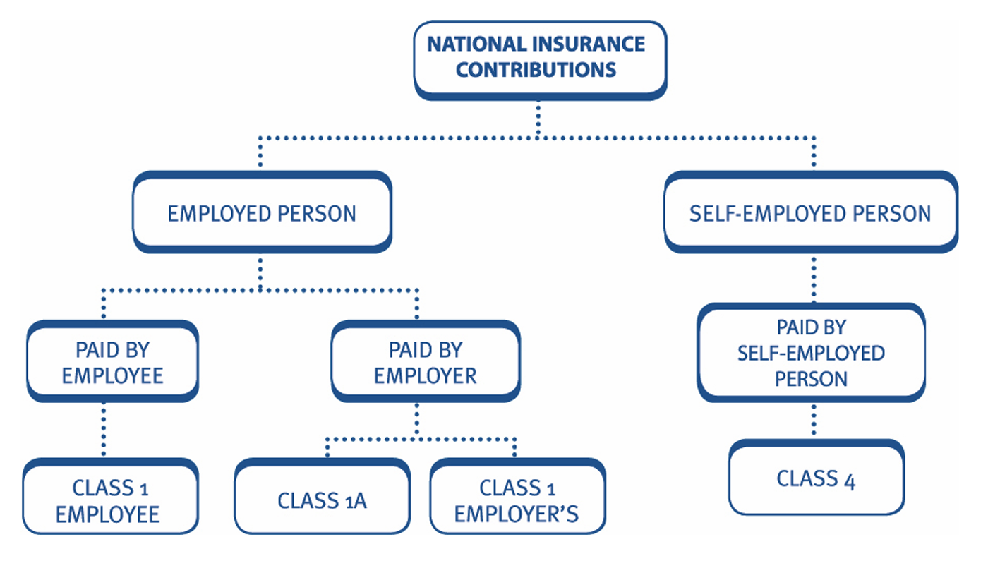
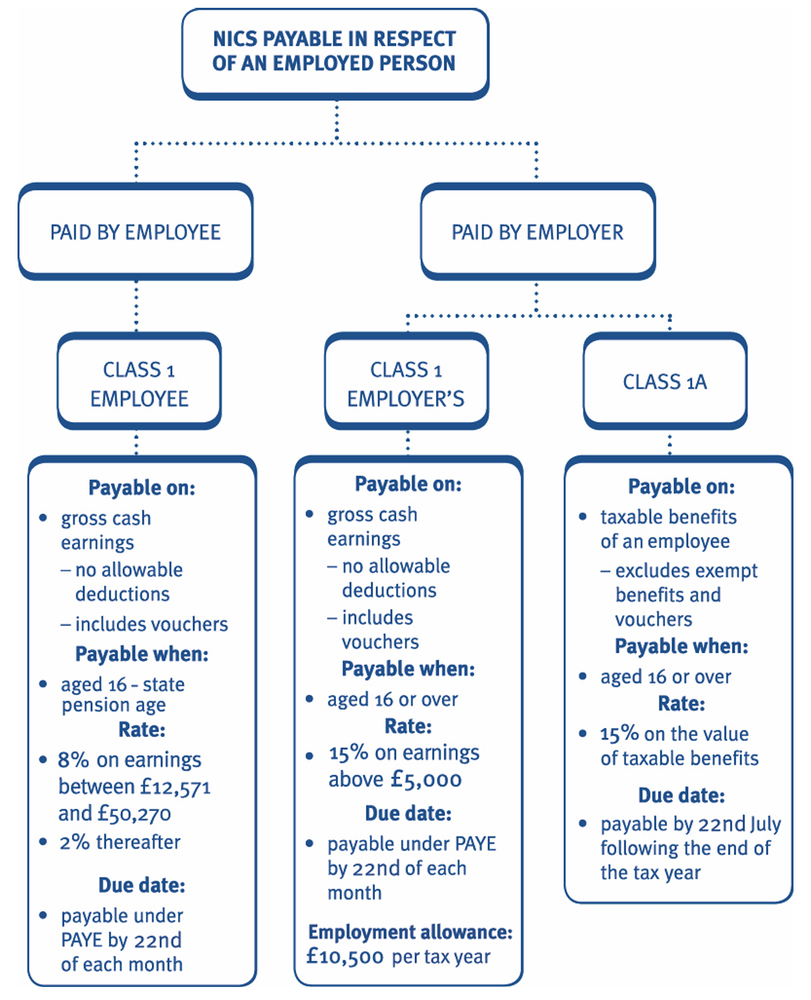
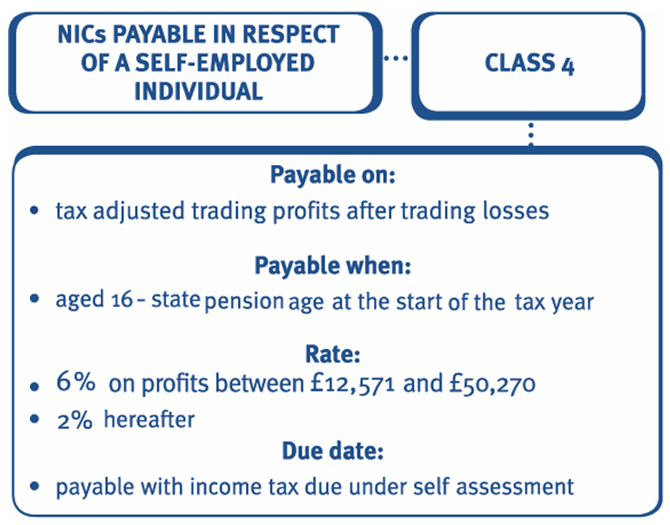
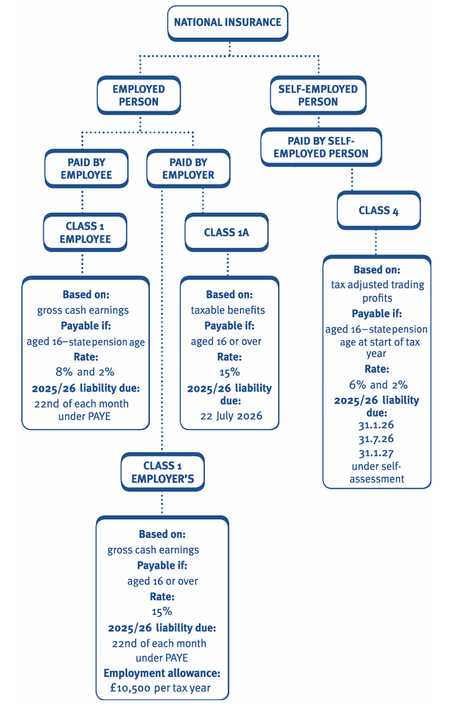

Chapter 11: National Insurance Contribution (NIC)
explain and compute national insurance contributions payable:
- Class 1 and 1A NIC
- Class 4 NIC
understand the annual employment allowance.

National Insurance Contribution (NIC)
Classes of national insurance contributions
The amount of national insurance contributions (NICs) a person pays and the payment of contributions depend on the class of contribution.
The main classes and persons who are liable are as follows:
| Class of contribution | Basis of assessment | Person liable |
|---|---|---|
| Class 1 employee | A percentage based contribution levied on employee earnings in excess of the employee limit for the tax year 2025/26 of £12,570 | Employee |
| Class 1 employer’s | A percentage based contribution levied on employee earnings in excess of the employer’s limit for the tax year 2025/26 of £5,000 | Employer |
| Class 1A | A percentage based contribution levied on taxable employment benefits provided to employees | Employer |
| Class 4 | A percentage based contribution levied on taxable trading profits in excess of the lower profits limit £12,570 for the tax year 2025/26 | Self-employed |
Example 1: Classes of NICs
Catalina has been self-employed for many years. She employs a fulltime salesman and six part-time employees. Catalina’s taxable trading profits for the tax year 2025/26 are £86,000.
The salesman earns a salary of £21,000 p.a. and is provided with a company car. The remaining members of staff are part time and earn £4,900 per annum.
Explain which classes of NICs are payable by Catalina.
Solution
Catalina will pay:
- Class 4 NICs in respect of her self-employed business based on her taxable trading profits as they are in excess of £12,570.
- Class 1 employer’s NICs as Catalina is an employer. The contributions are based on the salesman’s salary of £21,000 as his earnings are in excess of £5,000.
- Class 1A NICs based on the taxable employment benefit arising from the provision of a company car to the salesman.
No NICs are payable in respect of the remaining six part-time staff members as they each earn less than £5,000 p.a.
The salesman is liable to pay employee class 1 contributions based on his salary of £21,000.
Example 2: Classes of NICs
Stephen works for Camberley Cars Ltd on a part-time basis earning a salary of £19,000 per annum. He is provided with a company car, with petrol for both business and private mileage, and a place is provided for his daughter at the company’s workplace nursery while he is working for them.
Stephen also runs a bed and breakfast business from his home. In the year to 31 March 2026 his taxable trading profit from the business is £13,300.
Explain which classes of NICs are payable by Stephen and Camberley Cars Ltd in respect of the tax year 2025/26.
Solution
Stephen will pay:
- Class 1 employee NICs based on his salary from Camberley Cars Ltd of £19,000 as his earnings are in excess of £12,570.
- Class 4 NICs in respect of his bed and breakfast business based on his taxable trading profits as they are in excess of £12,570.
Camberley Cars Ltd will pay:
- Class 1 employer’s NICs based on Stephen’s salary of £19,000 as his earnings are in excess of £5,000.
- Class 1A NICs based on the taxable employment benefit arising from the provision of a company car and private petrol to Stephen.
Class 1A NICs are not payable in respect of the provision of a workplace nursery as it is an exempt benefit.
NICs payable in respect of employees
The following NICs are payable in respect of employees:
- Class 1 employee NICs
- Class 1 employer’s NICs
- Class 1A NICs.
Class 1 employee and employer’s NICs
Both the class 1 contribution paid by the employee and the class 1 contribution paid by the employer are a percentage based contribution levied on the ‘gross earnings’ of the employee in excess of the earnings limit. The earnings limit for the tax year 2025/26 is £12,570 for employees and £5,000 for employers.
Relevant employees
Class 1 NICs are payable where the individual:
- is employed in the UK, and
- is aged 16 or over, and
- has earnings in excess of the earnings limit (£12,570 for employees and £5,000 for employers for 2025/26).
The definition of earnings for class 1 NIC purposes
‘Earnings’ for the purpose of class 1 NICs consists of:
any remuneration derived from the employment, which is paid in cash or assets which are readily convertible into cash.
The calculation of class 1 NICs is based on:
gross earnings with no allowable deductions
(i.e. earnings before deductions that are allowable for income tax purposes, such as employee occupational pension scheme contributions and subscriptions to professional bodies).
Gross earnings include:
- wages, salary, overtime pay, commission or bonuses
- sick pay, including statutory sick pay
- tips and gratuities paid or allocated by the employer
- reimbursement of the cost of travel between home and work
- vouchers (exchangeable for cash or non-cash items, such as goods).
Gross earnings do not include:
- exempt employment benefits (e.g. employer contributions into a pension scheme, a mobile phone, etc.) (Chapter 5)
- most taxable non-cash benefits – except remuneration received in the form of financial instruments, readily convertible assets and non-cash vouchers
- tips directly received from customers
- mileage allowance received from the employer provided it does not exceed the HM Revenue & Customs (HMRC) approved mileage allowance rate of 45p per mile (the excess above 45p per mile is subject to class 1 NICs). The allowance does not decrease to 25p after 10,000 miles in the tax year, as it does for income tax. As a result, if an employer pays above approved mileage rates, the amount subject to income tax can be different from the amount subject to class 1 national insurance
- expenses paid for or reimbursed by the employer for which an income tax deduction would be available e.g. employment related travel and subsistence costs.
Note that dividends are not subject to NICs, even if they are paid to a director/shareholder in place of a monthly salary.
Example 1: Definition of class 1 earnings
Lia and Ariel are employed by Garden Gnomes Ltd and both pay into the company’s occupational pension scheme. Their remuneration for the tax year 2025/26 is as follows:
| Lia (£) | Ariel (£) | |
|---|---|---|
| Salary | 30,000 | 55,000 |
| Bonus | 0 | 4,000 |
| Car benefit | 0 | 3,950 |
| Employer’s pension contribution | 2,300 | 4,575 |
| Employee’s pension contribution | 1,650 | 3,800 |
Calculate Lia and Ariel’s gross earnings for class 1 NIC purposes.
Solution
| Lia (£) | Ariel (£) | |
|---|---|---|
| Salary | 30,000 | 55,000 |
| Bonus | 0 | 4,000 |
| Gross earnings for class 1 NICs | 30,000 | 59,000 |
- The employer’s pension contributions are excluded as they are an exempt benefit.
- The employee’s pension contributions are ignored as these are not deductible in calculating earnings for NIC purposes.
- The car benefit is excluded as it is a non-cash benefit which will be taxed to class 1A NICs, not class 1.
Class 1 employees
Class 1 employee contributions are also known as primary contributions and are payable by employees:
- aged 16 or over until
- attaining state pension age.
The employer is responsible for calculating the amount of class 1 employee NICs due and deducting the contributions from the employee’s wages.
Note that class 1 employee NICs:
- are not an allowable deduction for the purposes of calculating the individual employee’s personal income tax liability
- do not represent a cost to the business of the employer, as they are ultimately paid by the employee. Therefore, they are not a deductible expense when calculating the employer’s taxable trading profits.
Calculating class 1 employee NICs
Employee contributions are normally calculated by reference to an employee’s earnings period:
- if paid weekly, the contributions are calculated on a weekly basis
- if paid monthly, the contributions are calculated on a monthly basis.
In the examination, the class 1 NIC limits are always shown on an annual basis and class 1 NIC calculations should therefore be performed on an annual basis unless you are clearly told otherwise.
The employee contributions payable are calculated as: - 8% on gross earnings between £12,571 and £50,270 - 2% on gross earnings in excess of £50,270.
The class 1 employee rates and limits are included in the tax rates and allowances provided to you in the examination.
The annual earnings limits can be used to calculate the rate of class 1 NICs payable where the employee’s earnings do not fluctuate during the year.
However, where an employee’s earnings fluctuate during the year:
- the calculations must be performed on an earnings period basis
- the annual earnings limits are divided into weekly or monthly
limits, used to compute class 1 NICs on each pay date. For example, the monthly upper limit would be £4,189 (£50,270 × 1/12).
Class 1 employer’s NICs
Class 1 employer’s contributions, also known as secondary contributions, are payable by employers in respect of employees:
- aged 16 or over
- until the employee ceases employment.
There is no upper age limit for employer’s contributions. The employer is liable for class 1 NICs even if the employee’s age exceeds state pension age.
Employer’s contributions are an additional cost of employment and are a deductible expense when calculating the employer’s tax adjusted trading profits.
Calculating class 1 employer’s NICs
Employer’s contributions are calculated by reference to an employee’s earnings period. In the examination, class 1 NIC calculations should be performed on an annual basis unless you are clearly told otherwise.
Employer’s contributions are calculated as:
15% on all gross earnings above £5,000. Note that there is:
- no upper earnings limit
- no change in the rate of NICs payable for employer’s contributions.
Example 2: Class 1 NICs
Millie is employed by Blue Forge Ltd and is paid an annual salary of £49,000. Millie is also provided with the following taxable benefits:
| £ | |
|---|---|
| Company car | £5,000 |
| Vouchers for the local gym | £2,000 |
Calculate Millie’s and Blue Forge Ltd’s class 1 NIC liability due for the tax year 2025/26.
Solution
| Millie’s class 1 employee’s NICs | £ |
|---|---|
| (£50,270 – £12,570) × 8% | 3,016 |
| (£51,000 – £50,270) × 2% | 15 |
| Total employee’s NICs | 3,031 |
| Blue Forge Ltd’s class 1 employer’s NICs | £ |
|---|---|
| (£51,000 – £5,000) × 15% | 6,900 |
Class 1 NICs are due on annual earnings of £51,000 (salary £49,000 and vouchers £2,000). The company car is a non-cash benefit and is therefore not subject to class 1 NICs.
Example 3: Class 1 NICs
Alex is paid £13,850 per year and Betty is paid £52,000 per year.
Calculate the employee’s and the employer’s class 1 NIC liability for the tax year 2025/26.
Solution
Company directors
Special rules apply to company directors to prevent the avoidance of NICs by paying low weekly or monthly salaries, and then taking a large bonus in a single week or month.
Therefore, when an employee is a company director, class 1 NICs are calculated as if the director had an annual earnings period, regardless of how the employee is paid (e.g. monthly, weekly).
Payment of class 1 contributions
The administration and payment of class 1 NICs is carried out by the employer as follows:
- The employer is responsible for calculating the amount of class 1 employee and employer’s contributions at each pay date.
- Employee contributions are deducted from the employee’s wages or salary by the employer and paid to HMRC on the employee’s behalf.
- The total employee and employer’s contributions are payable by the employer to HMRC, along with income tax deducted from the employees under PAYE.
- The payment is due on the 19th of each month (i.e. due not later than 14 days after the end of each PAYE month).
- However, most businesses pay electronically and are allowed an extra 3 days to pay. Therefore the payment is normally due on the 22nd of each month. The electronic pay day should be used in the examination.
- The specific payment rules for very small employers and those not paying electronically are covered in detail in Chapter 12.
NIC employment allowance
Employers are able to claim up to £10,500 relief p.a. from their class 1 employer’s NIC payments. Note that the allowance:
- cannot be used against any other classes of NICs (e.g. class 1A)
- is claimed through the real time information (RTI) PAYE system (Chapter 12)
- is not available to companies where a director is the sole employee.
Information regarding the prior year’s class 1 employer’s NICs will be provided in the examination question where required.
The £10,500 allowance is included in the tax rates and allowances provided to you in the examination.
Class 1A NICs
Employers are required to pay class 1A NICs on taxable benefits provided to employees.
No class 1A NICs are payable in respect of:
- exempt benefits, i.e. those benefits which are exempt from income tax (Chapter 5)
- benefits already treated as earnings and subject to class 1 NICs, such as remuneration received in the form of non-cash vouchers (as explained earlier).
The contributions are calculated as:
- 15% on the value of the taxable benefits.
Class 1A NICs are an additional cost of employment and are a deductible expense when calculating the employer’s tax adjusted trading profits.
Example 4: Class 1A NICs
Sloane is employed by Dutton Ltd at an annual salary of £53,000.
They were provided with a company car throughout the tax year 2025/26 that had a list price of £15,000. The car has CO2 emissions of 128g/km. Petrol for both business and private mileage is provided by Dutton Ltd.
Calculate the employee’s and the employer’s class 1 and class 1A NIC liabilities due for the tax year 2025/26 in respect of Sloane.
Ignore the employment allowance.
Solution
Class 1 NICs
| Employee class 1 NICs | £ |
|---|---|
| (£50,270 – £12,570) × 8% | 3,016 |
| (£53,000 – £50,270) × 2% | 55 |
| Total employee’s NICs | 3,071 |
| Employer’s class 1 NICs | £ |
|---|---|
| (£53,000 – £5,000) × 15% | 7,200 |
Class 1A NICs
Sloane’s taxable benefits for class 1A purposes are as follows:
| Description | £ |
|---|---|
| Company car: 17% + ((125 – 55) × 1/5) = 31% × £15,000 | 4,650 |
| Private fuel provided by company (31% × £28,200) | 8,742 |
| Taxable benefits for class 1A NICs | 13,392 |
| £ | |
|---|---|
| Employer’s class 1A NICs (£13,392 × 15%) | 2,009 |
The employment allowance is deducted from the total liability for class 1 employer’s NICs, not from the liability relating to one individual.
Example 5: Class 1 & 1A NICs
Blessing is paid £25,000 per year and had taxable benefits for the tax year 2025/26 of:
| Item | £ |
|---|---|
| Company car | 5,268 |
| Private fuel provided by company | 4,182 |
| Private use of an asset | 2,600 |
| Vouchers to be used at the local department store | 250 |
The company also provided Blessing with a mobile phone, which cost £135.
Contributions into her personal pension scheme were as follows:
| Contribution | £ |
|---|---|
| Employer’s contribution | 2,540 |
| Employee’s contribution | 1,380 |
Calculate the employee’s and the employer’s class 1 and class 1A NIC liabilities for the tax year 2025/26 in respect of Blessing. Ignore the employment allowance.
Solution
Payment of class 1A NICs
Class 1A NICs are payable to HMRC by 19 July following the end of the tax year (i.e. by 19 July 2026 for the tax year 2025/26).
However, most businesses pay electronically and therefore pay by 22 July following the end of the tax year. The electronic pay day should be used in the examination.

NICs payable in respect of self-employed individuals
Class 4 NICs are payable by self-employed individuals:
Class 4 NICs
Class 4 contributions are payable by self-employed individuals who at the start of the tax year, are aged 16 or over.
They continue to pay until the end of the tax year in which they reach state pension age.
Class 4 NICs are a percentage based contribution levied on the ‘profits’ of the individual in excess of £12,570 for the tax year 2025/26.
Note that class 4 contributions:
• are not an allowable deduction for the purposes of calculating the individual’s income tax liability • are not a deductible expense when calculating the business’s tax adjusted trading profits.
The definition of profits
‘Profits’ for the purposes of class 4 `NICs consists of:
- the trading profits of the individual that are subject to income tax,
- plus transition profits (if any),
- less trading losses (if any).
Note that ‘profits’ are before deducting the individual’s personal allowance that is available for income tax purposes.
If the individual has more than one business, the aggregate of all profits from all self-employed occupations are used to calculate the class 4 NIC liability.
Calculating class 4 NICs
The contributions payable are calculated as:
- 6% on profits between £12,571 and £50,270.
- 2% on profits in excess of £50,270.
The rate and limits for class 4 NICs are included in the tax rates and allowances provided to you in the examination.
Example 1: Class 4 NICs
James has been trading as a self-employed painter and decorator since 2003. His tax adjusted trading profits for the tax year 2025/26 are £62,000 and he has trading losses brought forward of £10,000. His wife, Poppy, is a part-time mobile hairdresser. Her tax adjusted trading profits for the tax year 2025/26 are £13,560.
Calculate the class 4 NICs payable by James and Poppy for the tax year 2025/26.
Solution
| James | £ |
|---|---|
| Tax adjusted trading profits | 62,000 |
| Less: Trading losses brought forward | (10,000) |
| Profits for class 4 purposes | 52,000 |
| Class 4 NICs | £ |
|---|---|
| (£50,270 – £12,570) × 6% (maximum) | 2,262 |
| (£52,000 – £50,270) × 2% | 35 |
| Total class 4 NICs | 2,297 |
| Poppy | £ |
|---|---|
| (£13,560 – £12,570) × 6% | 59 |
Example 2: Class 4 NICs
Jackie is a self-employed builder who has been in business for many years and prepares accounts to 31 March each year.
Her tax adjusted trading profit for the year ended 31 March 2026 is £56,850.
Calculate Jackie’s class 4 NIC liability for the tax year 2025/26.
Solution
Payment of class 4 contributions
Class 4 contributions are paid to HMRC at the same time as the individual’s income tax payments. Income tax and class 4 NICs due are collected by HMRC through the self-assessment system.
The detailed administration and payment rules are covered in Chapter 12.

Total NICs payable by a self-employed individual A self-employed individual pays Class 4 NICs in respect of their trading profits
In addition, if self-employed individuals employ staff, they will also be required to account for:
class 1 employee, class 1 employer’s and class 1A NICs in respect of earnings and benefits provided to employees.
An examination scenario focusing on a sole trader could therefore involve consideration of all of these classes of NIC.
Example 3: Self Employed
Diane has been a self-employed computer consultant for many years. Her tax adjusted trading profits for the tax year 2025/26 are £52,500.
Diane has employed one employee for many years, a full-time personal assistant, at a salary of £38,300 per annum. She also provides the assistant with a diesel-engine company car, which has a list price of £13,500, CO2 emissions of 109g/km and meets the RDE2 standard.
Diane pays for the assistant’s private and business fuel.
Diane’s class 1 employer’s liability was £3,680 in the previous tax year.
Calculate the total NICs that Diane must account for to HMRC in respect of the tax year 2025/26.
Solution

Practices on Additional aspects
Objective Test (OT) questions
Q1: Class 1 employee NICs
Q2: Class 1 contributions
Q3: Class 1 employer’s national insurance contributions
Q4: Classes of NIC
Q5: Employed and Self-employed NCI
Q6: Class 1 NIC
Q7: Class 1 NIC
Q8: Employer’s class 1 NICs
Q9:
Constructed response questions
Q1: Tax Savings
The following scenario relates to two requirements.
You should assume that today’s date is 1 March 2025.
Sarah is currently self-employed. If she continues to trade on a self-employed basis, her total income tax liability and national insurance contributions (NIC) for the tax year 2025-26 will be £11,034.
However, Sarah is considering incorporating her business on 6 April 2025. The forecast taxable total profits of the new limited company for the year ended 5 April 2026 will be £50,000 (before taking account of any director’s remuneration). Sarah will pay herself gross director’s remuneration of £30,000 and dividends of £10,000. The balance of profits will remain undrawn within the new company.
The new limited company will not be entitled to the NIC annual employment allowance.
(a) Determine whether or not there will be an overall saving of tax and national insurance contributions (NIC) for the year ended 5 April 2026 if Sarah incorporates her business on 6 April 2025.
(b) Advise Sarah as to why her proposed basis of extracting profits from the new limited company is not optimum for tax purposes, and suggest how the mix of director’s remuneration and dividends could therefore be improved.
Solution
(a)
(1) Sarah’s income tax liability 2025-26:
| £ | |
|---|---|
| Director’s remuneration | 30,000 |
| Dividend income | 10,000 |
| Personal allowance | (12,570) |
| Taxable income | 27,430 |
| Income tax: | |
| 17,430 at 20% | 3,486 |
| 500 at 0% | 0 |
| 500 (10,000 - 500) at 8.75% | 831 |
| Income tax liability | 4,317 |
(2) National insurance contributions (NIC) 2025-26:
| £ | |
|---|---|
| Employee class 1 (£30,000 - £12,570) at 8% | 1,394 |
| Employer’s class 1 (£30,000 - £5,000) at 15% | 3,750 |
(3) Corporation tax liability of the new limited company for the year ended 5 April 2026:
| £ | |
|---|---|
| Trading profit | 50,000 |
| Director’s remuneration | (30,000) |
| Employer’s class 1 | (3,750) |
| Taxable total profits | 16,250 |
| Corporation tax (16,250 at 19%) | 3,088 |
- The total tax and NIC cost if Sarah incorporates her business is £12,548 (4,317 + 1,394 + 3,750 + 3,088).
- Therefore, if Sarah incorporated her business there would be additional tax and NIC payable of £1,514 (12,548 – 11,034) compared to continuing on a self-employed basis.